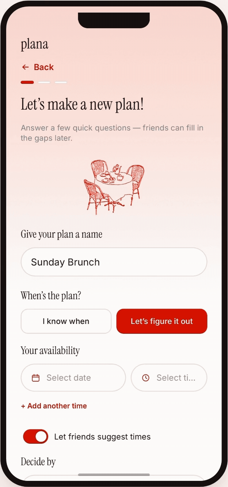
Turning an Idea into a Plan
- Add multiple times and locations for polling
- Create an invite without knowing all the details yet
- Get an automatic, ready-to-send invite card
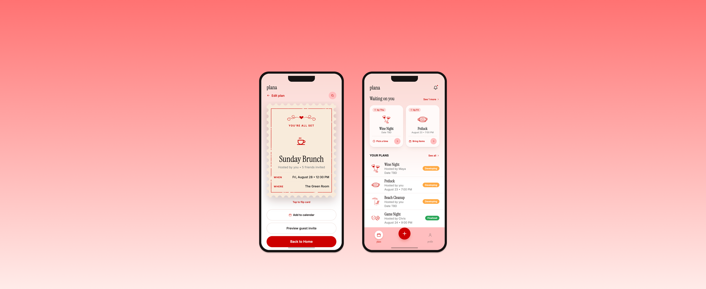
Event Planning App
Problem
There are apps that help people find a time that works for everyone, and apps that send out invites once everything's decided, but nothing that streamlines the whole process in between.
Solo
UX/UI Designer
1 week
Key Outcome
Designed a single flow that closes the gap between scheduling tools and invite tools, so a group can go from a loose "we should hang out sometime" to a locked-in event without ever leaving the app.
What I Drove
Plana is a mobile app that helps friends actually lock in plans. It polls everyone on times and locations, organizes who's bringing what, and sends out cute, shareable invites, replacing the scattered group chat thread with one streamlined flow.
You are now viewing:
01 Solution

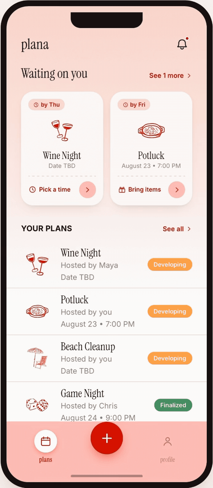
02 Research
During the summer, I kept noticing my friends struggle to lock down plans. Texts got buried in the group chat, and half the time nobody agreed on where or when.
Key Finding
There's no app for scheduling half-baked plans. It needs to cut the back-and-forth, but still feel fun enough that people actually want to use it.
03 Define
These pain points pointed to a single design challenge:
04 Design
The hardest part was keeping the flow fast and flexible enough to fit any kind of plan, in person or online, formal or casual. Since nobody tracks everyone's availability upfront, I decided to incorporate a "Let's figure it out" option: hosts propose a few tentative times and locations, friends can add their own, and everyone polls on what actually works.
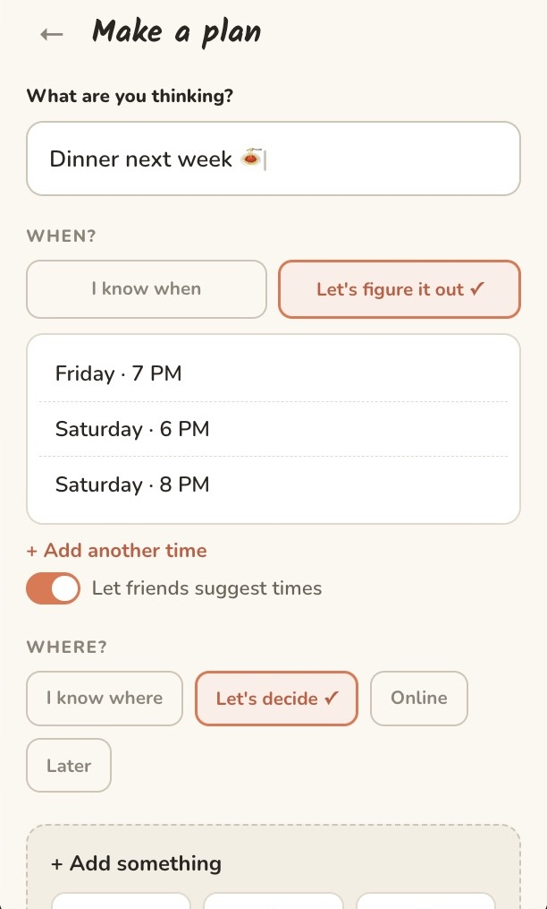
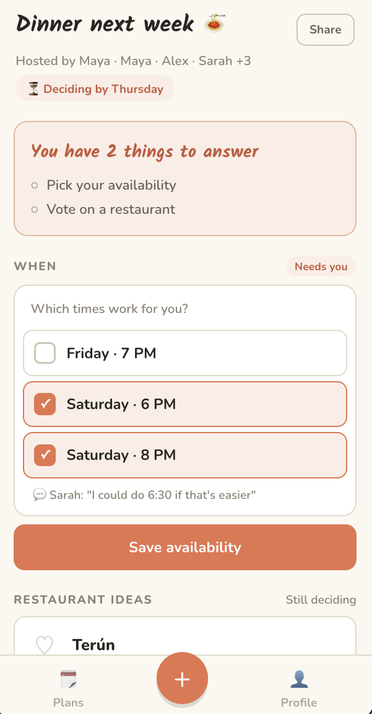
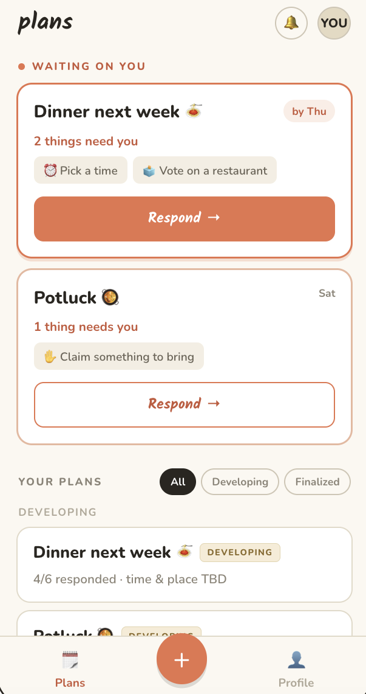
I also wanted every plan to generate a shareable invite card automatically, and for anyone with something left to answer to get notified, so plans keep moving instead of stalling out.
I started with a mood board to find the right feel: sketched icons, cute card invitations, and a personal touch, built for a young audience in their 20s.
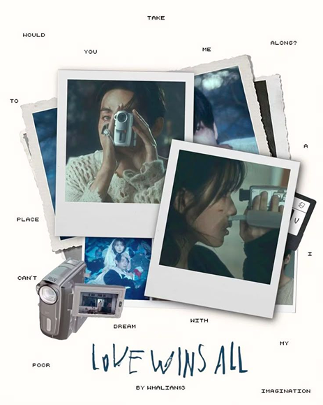
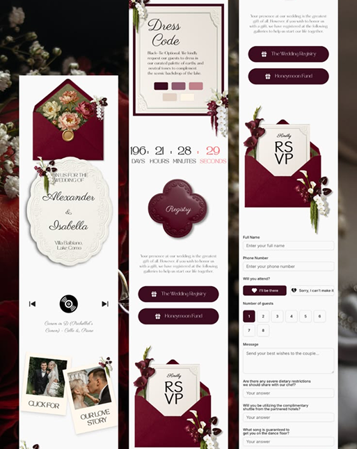
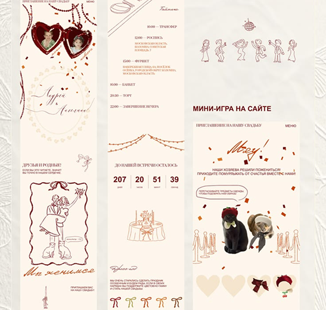
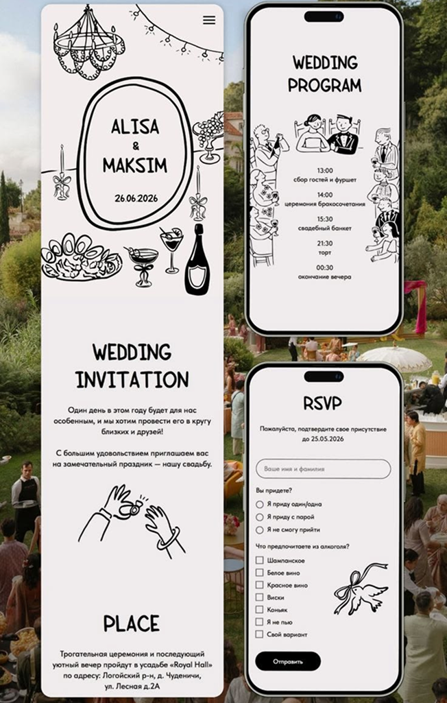
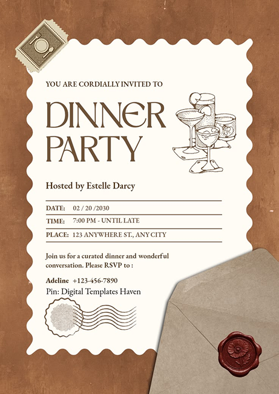
From there, I built three mockup screens to get a feel for the overall vibe before going any further.
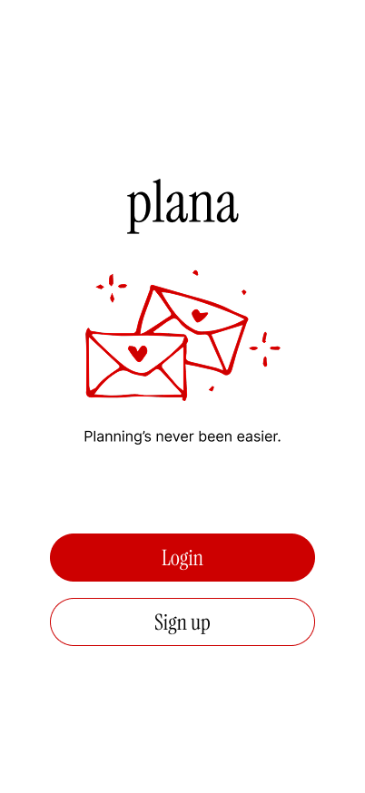
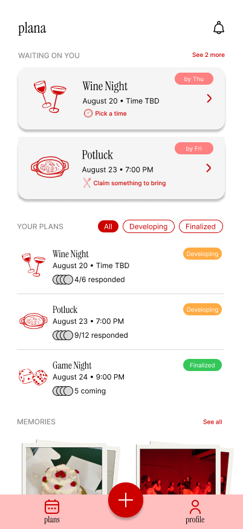
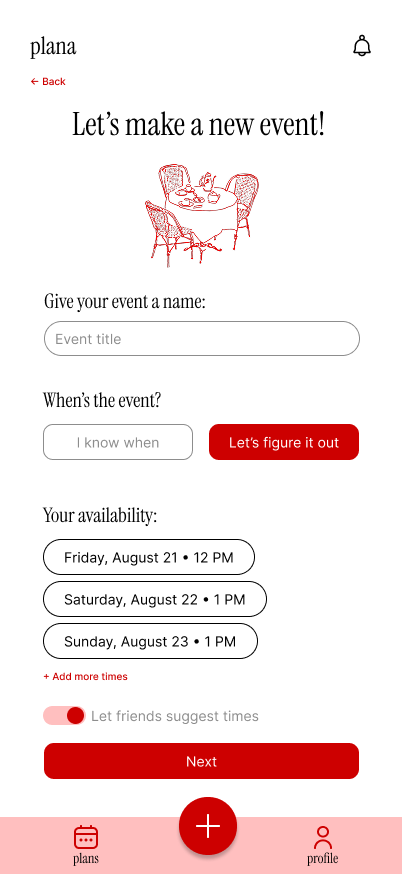
I brought that same mood into Claude to build out the rest of the screens and a working prototype, carrying the sketched icons through to the most important ones. The location step alone covers in-person, online, and undecided plans, with bring-list and link fields built right in. Past plans automatically become memories, where friends can add their own photos to hold onto them.
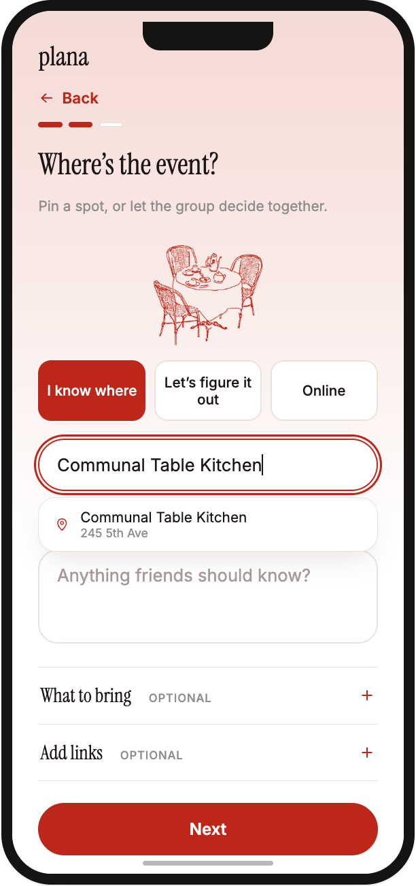
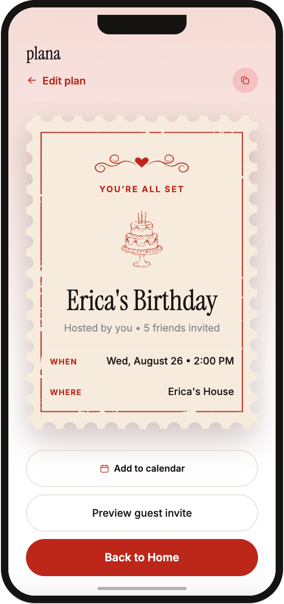
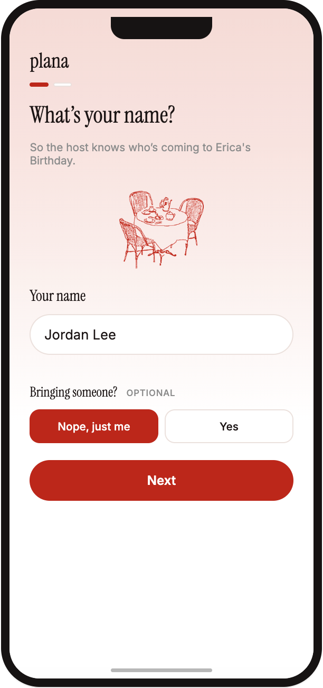
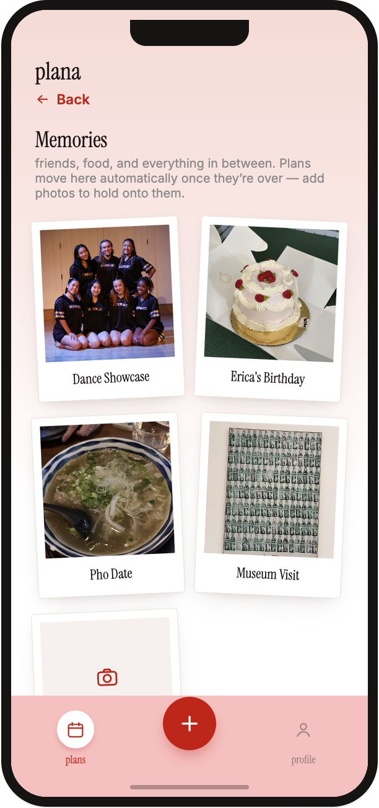
05 Impact
If I shipped this, these are the numbers I'd watch to know Plana is solving the problem, not just getting downloads.
The core promise: how often a loose idea actually becomes a locked-in plan
Whether the creation flow is smooth enough to finish in one sitting
How much friction is left once it's a guest filling out the form
Overall adoption and whether people come back to plan again
06 Reflection
The real bottleneck in group planning isn't finding a time, it's that no one owns getting the plan across the finish line. Building in visible reminders for exactly what's still unanswered ended up mattering more than any scheduling logic. It also pushed me to think harder about designing for messy, half-formed decisions instead of clean, finished ones.
I also learned how much faster I can move by using Claude as part of my process, both for building a working prototype and for catching edge cases and logic gaps I'd missed. Getting quick, direct feedback helped me iterate faster while staying close to my own ideas, and it's a workflow I want to keep using going forward.
back to top ↑